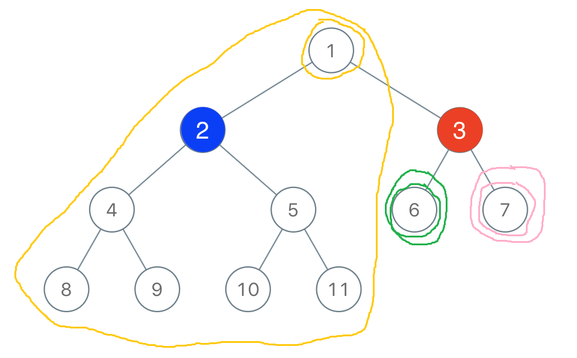
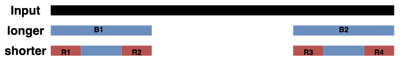

这周的题目难度呈现出一种比较诡异的状态。
标记难度：Easy
提交次数：1/1
代码效率：100.00%（0ms）
题意
给定一个整数数组，问将其中的部分元素共-1多少次，才能将这个数组变成一个zigzag数组（数字按index顺序依次增加和减小）。
分析
题目中已经指出zigzag数组只有两种，因此可以进行分类讨论。因为只能将部分元素-1，所以显然最优的做法就是将那些应该比两侧元素都小的元素减小到合适大小。
代码
1 2 3 4 5 6 7 8 9 10 11 12 13 14 15 16 17 18 19 20 21 22 23 24 25 26 27 28 29 30 31 32 33 class Solution {public : int movesToMakeZigzag (vector <int >& nums) int n = nums.size(); if (n == 1 ) return 0 ; vector <int > a = nums; int n1 = 0 ; for (int i = 1 ; i <n; i += 2 ) { int minn = a[i-1 ]; if (i != n - 1 ) minn = min(minn, a[i+1 ]); if (a[i] >= minn) { n1 += a[i] - minn + 1 ; a[i] = minn - 1 ; } } a = nums; int n2 = 0 ; for (int i = 0 ; i < a.size(); i += 2 ) { int minn; if (i == 0 ) minn = a[i+1 ]; else if (i == n - 1 ) minn = a[i-1 ]; else minn = min(a[i-1 ], a[i+1 ]); if (a[i] >= minn) { n2 += a[i] - minn + 1 ; a[i] = minn - 1 ; } } return min(n1, n2); } };
标记难度：Easy
提交次数：1/1
代码效率：100.00%（0ms）
题意
有一颗二叉树，Alex和Lee轮流在树上用红色和蓝色对结点染色，在他们分别染完第一个点后，接下来染色的点必须与之前自己染过的对应颜色的点相邻。最后自己染色的结点数量超过总结点数量一半的人获胜。假设两人都以最优策略染色，Alex已经染了第一个红点 ，问此时Lee是否有必胜策略？如果有，他此时应该把哪个点染成蓝色？
Follow-up：如果游戏从头开始，如何判断Alex是否有必胜策略？请给出他染色后必胜的结点集合。
分析
似乎很多人一开始都直接把题目给理解成Follow-up了，没看见已经染了一个点。不过反正Follow-up也很简单……
对于树这种数据结构，如果移除一个结点，显然会把树分成（大约，有些部分可能为空）不连通的三份：左子树，右子树，以及树中除了以该结点为根的子树剩下的部分，如下图所示：

对一个结点进行红色染色对蓝色结点来说相当于把树分割了，Lee最多只能对这三部分之中的一部分进行染色；为了防止红色结点继续进入这一部分，他应该首先染最靠近红色结点的那个结点。如果有一部分的结点数量超过总结点数量的一半，则Lee有必胜策略；否则没有。计算结点数量的方法很简单，做一次DFS计算每个结点对应子树的大小，然后就可以立刻得到结点左子树大小、右子树大小和（总结点个数-结点子树大小）了。
Follow-up就是对每个结点算一遍上述三部分的大小，如果结果是Lee无法获胜，则这个结点对Alex来说是获胜结点。
代码
1 2 3 4 5 6 7 8 9 10 11 12 13 14 15 16 17 18 19 20 21 22 23 24 class Solution { int subsize[105 ]; TreeNode* nodes[105 ]; int dfs (TreeNode* root) if (root == NULL ) return 0 ; nodes[root->val] = root; int sum = 1 + dfs(root->left) + dfs(root->right); subsize[root->val] = sum; return sum; } public : bool btreeGameWinningMove (TreeNode* root, int n, int x) int sum = dfs(root); int maxn = -1 ; TreeNode* redNode = nodes[x]; maxn = redNode->left != NULL ? subsize[redNode->left->val] : 0 ; maxn = redNode->right != NULL ? max(maxn, subsize[redNode->right->val]) : 0 ; maxn = max(maxn, sum - subsize[x]); return maxn > n / 2 ; } };
标记难度：Medium
提交次数：1/3
代码效率：87.91%（264ms）
题意
实现一个包含以下几种操作的数组：
set(index, val)：将index处设为valsnap()：保存数组历史记录get(index, snap_id)：获得index处在snap_id次记录时的值
分析
这大概就是传说中的可持久化数据结构了。不知道直接上棵可持久化线段树之类的方法是不是可取，但是眼下这样做就够了。
如果每次snapshot都存一遍数组，就会MLE，所以不能这样存。显然，每两次snapshot之间数组的变化并不是很大（准确地说，只有被set的那些index变化了）。那么，我们就可以在每次snapshot的时候，把发生变化的index对应的snap_id和变化之后的值存到一个数组里；之后在get的时候直接二分查找即可。
一个值得注意的事情是，每次snapshot的时候不能进行O(N)的操作（比如扫描一遍新数组和旧数组，看看有什么差别），所以我换成用一个map来存发生了变化的值。当然，实际上不必这么复杂，直接给每个数组开一个map都可以……
代码
1 2 3 4 5 6 7 8 9 10 11 12 13 14 15 16 17 18 19 20 21 22 23 24 25 26 27 28 29 30 31 32 class SnapshotArray { vector <vector <pair<int , int >>> changes; map <int , int > curChanges; int n; int snap_id; public : SnapshotArray(int length) { n = length; changes = vector <vector <pair<int , int >>>(length, vector <pair<int , int >>()); snap_id = 0 ; } void set (int index, int val) curChanges[index] = val; } int snap () for (auto p: curChanges) changes[p.first].emplace_back(snap_id, p.second); curChanges.clear(); return snap_id++; } int get (int index, int snap_id) auto iter = upper_bound(changes[index].begin(), changes[index].end(), make_pair(snap_id, 1000000005 )); if (iter == changes[index].begin()) return 0 ; iter--; return iter->second; } };
标记难度：Hard
提交次数：1/1
代码效率：50.69%（8ms）
题意
将一个字符串a分成若干个a_1, a_2, ..., a_k，使得k最大且满足a_1 = a_k，a_2 = a_(k-1)……，求k的最大值。
分析
这道题标的是Hard，但是通过率巨高。
为什么呢……？
因为直接贪心就好啦……！！！
证明见下图即可：

从图中可以看出，如果当前剩余的字符串中同时有两个不同长度的字符串都匹配，则由于它们位于相同的位置，长字符串必然包含两份短字符串，无论是否重叠，都可以把长字符串拆成至少两份，这样这一解法就必然比选择更长的字符串好，所以直接选两侧最短的匹配字符串即可。
代码
1 2 3 4 5 6 7 8 9 10 11 12 13 14 15 16 17 18 19 20 class Solution {public : int longestDecomposition (string text) int last = 0 ; int ans = 0 ; int n = text.size(); for (int i = 0 ; i < n - i - 1 ; i++) { string s1 = text.substr(last, i - last + 1 ); string s2 = text.substr(n - i - 1 , i - last + 1 ); if (s1 == s2) { last = i + 1 ; ans += 2 ; } } if (last < (n + 1 ) / 2 ) ans += 1 ; return ans; } };